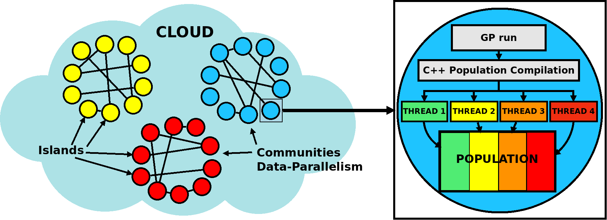

FlexGP
Tutorial and Blog
FlexGP: large-scale machine learning with evolutionary computation
FlexGP is a project aimed at data modeling and knowledge discovery with evolutionary computation. Within the scope of FlexGP, we have developed two cloud platforms for large-scale machine learning and a number of evolutionary learners.
Cloud-based platforms
FlexGP: a cloud platform for large scale regression problems

FCUBE: a cloud platform for large scale classification problems

Evolutionary learners based on Genetic Programming
We provide an overview and tutorial of the different core learners developed within the frame of the FlexGP project.
Evolutionary feature search
Publications
Arnaldo, I.; Veeramachaneni, K; O'Reilly, UM: Building Multiclass Nonlinear Classifiers with GPUs. Big Learning Workshop at NIPS: Advances in Algorithms and Data Management, 2013.
Arnaldo, I.; Krawiec, K.; O'Reilly, UM: Multiple regression genetic programming. Proceedings of the 2014 conference on Genetic and evolutionary computation (GECCO 2014). Pages 879-886, 2014.
Veeramachaneni, K; Arnaldo, I; Derby, O; O’Reilly, UM: FlexGP: Cloud-Based Ensemble Learning with Genetic Programming for Large Regression Problems. Journal of Grid Computing. November, 2014.
Ignacio Arnaldo, Kalyan Veeramachaneni, Andrew Song, Una-May O’Reilly: Bring Your Own Learner! A cloud-based, data-parallel commons for machine learning. To appear in IEEE Computational Intelligence Magazine. Special Issue on Computational Intelligence for Cloud Computing (Feb. 2015).
Support or Contact
This project is developed by the Any-Scale Learning For All (ALFA) group at MIT. Contact us by email at iarnaldo@mit.edu